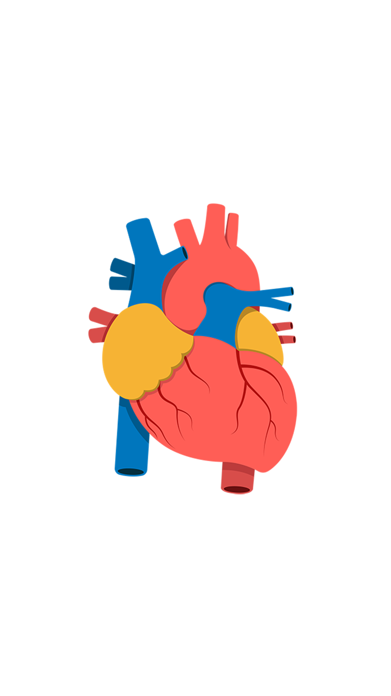

Dra. Patricia Parreira Belo
Especialista em Cardiologia
e Clínica Médica
Pós graduação em Psiquiatria
CRM 6857 GO - 88773 SP
Trajetória

+ 20 anos de experiência
Médica com mais de 20 anos de experiência em consultório físico e, agora, em telemedicina. Além disso, em atendimentos hospitalares, emergências, unidades de terapia intensiva geral, cardiológica e ambulatórios de especialidades.
A Dra. Patricia possui como objetivo oferecer um atendimento personalizado e humanizado na prevenção, diagnóstico e tratamento de doenças com excelentes resultados utilizando de sua ampla experiência médica.
Currículo
Especialista Mestre Cardiologia - RQE 2666 Escola Paulista de Medicina UNIFESP-SBC
Especialista Clínica Médica - RQE 12694 Escola Paulista de Medicina UNIFESP-SBCM
Especialista Medicina de Urgências - RQE 12695 Associação Médica Brasileira AMB-SBCM
Pós Graduação Psiquiatria Faculdade CENBRAP-MEC
Tutora e Preceptora Hospital das Clínicas UFG-EBSERH
Experiência Profissional

Telemedicina
A Dra. Patricia realiza consultas por telemedicina, permitindo a você ter acesso aos seus serviços sem sair de sua casa ou de seu trabalho, apenas com um celular ou notebook.
A teleconsulta da Dra. Patricia segue os moldes da Resolução CFM 2.314/2022.
Essa inovação propociona aos pacientes conforto, flexibilidade, rapidez e sigilo para falar em português com a sua médica brasileira de qualquer cidade no Brasil e no mundo, o que é importante para brasileiros que vivem no exterior.
Serviços
Risco Cirúrgico, Check-up
Prescrição de canabidiol (CBD) no tratamento de Epilepsias, Síndrome de Dravet e Lennox-Gastaut, Esclerose Tuberosa, Dç de Alzheimer, Parkinson, dores crônicas, ansiedade e insônia [CFM n°2324/2022 e Anvisa n°327]
Infarto do miocárdio
Pressão alta: Hipertensão arterial
Colesterol, glicose e triglicérides elevado
Dor no peito, inchaço, palpitações, dor de cabeça
Desmaios, tontura, cansaço e falta de ar
Mulher na menopausa
Derrame: AVC-Acidente Vascular Cerebral
Ansiedade, depressão, insônia e irritabilidade
Contato
E-mail: patriciaparreirabelo@gmail.com
Linkedln: linkedin.com/in/patriciabelomd/
Telefone: +55 (62) 999943007
Foco